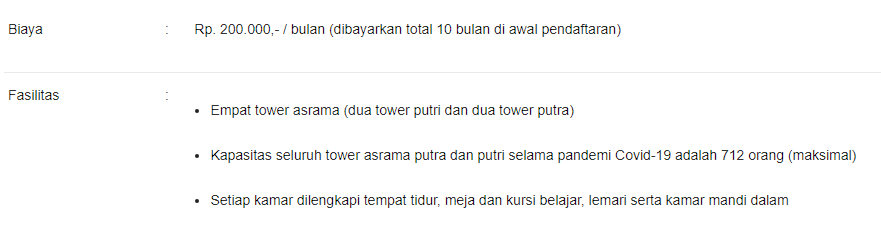

Selamat Datang di Website Asrama ITERA
Sejak angkatan 2017, Institut Teknologi Sumatera (ITERA) memiliki program pembinaan di asrama bagi mahasiswa baru. Program ini mewajibkan seluruh mahasiswa penerima KIP-Kuliah dari luar Bandar Lampung, yang diterima melalui jalur SNMPTN maupun SBMPTN, untuk tinggal di asrama selama mengikuti Tahap Persiapan Bersama (TPB). Asrama merupakan salah satu fasilitas yang disediakan ITERA untuk mendukung pembinaan tersebut.
Informasi Singkat
Setiap mahasiswa baru ITERA nantinya akan diwajibkan untuk mengikuti Program Pembinaan Asrama TPB ITERA. Akan tetapi, mengingat kapasitas asrama yang masih terbatas, ITERA menetapkan prioritas untuk mahasiswa baru lainnya untuk tinggal di asrama...
- Mahasiswa baru ITERA penerima Kartu Indonesia Pintar yang telah mendaftar...
- Mahasiswa baru ITERA yang berasal dari luar Provinsi Lampung...
- Mahasiswa baru ITERA yang berasal dari seluruh Kabupaten/Kota Provinsi Lampung...
- Apabila kuota penghuni asrama yang dimaksud dalam poin 1 dan 2 belum terpenuhi...
Informasi Biaya dan fasilitas
Alokasi Kamar
Tentang penggunaan asrama sebagai tempat tinggal bagi mahasiswa baru...
- TB 1 (putri) : 176 orang
- TB 2 (putra) : 176 orang
- TB 3 (putra) : 180 orang
- TB 4 (putri) : 180 orang
- Total 4 Tower : 712 orang (maksimal)